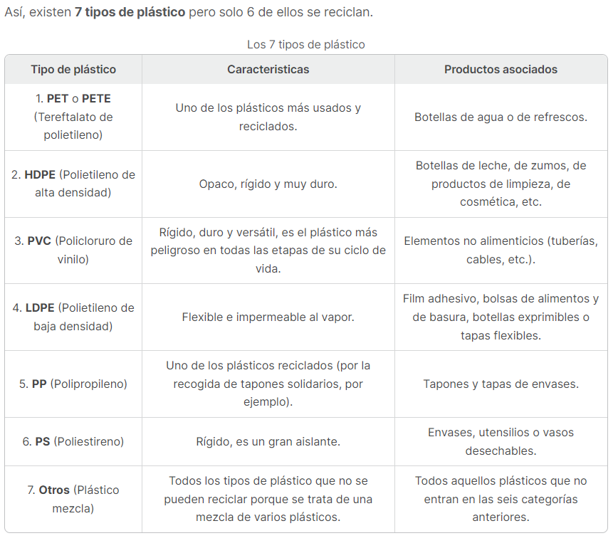

Papel
¿Cómo reciclar el papel?
El contenedor azul es uno de los más fácil de usar. En la actualidad, hay aproximadamente un contenedor azul por cada 215 personas. Está destinado exclusivamente para papel y cartón. Todo el papel de nuestra vida cotidiana se puede clasificar y reciclar, incluso el papel viejo arrugado o rasgado, siempre y cuando estén libres de restos. Hay muy pocas excepciones pero muchos falsos amigos.

Plastico
¿Cómo reciclar el plastico?
Para reciclar correctamente los residuos de plástico, primero hay que saber reconocer los diferentes tipos de plástico que existen. Para ello, la industria del plástico introdujo una clasificación de los plásticos que permite a los consumidores reconocer el tipo de plástico y que, por tanto, les ayuda indirectamente en el reciclaje de los residuos de plástico.

El plastico se debe depositar en los contenedores amarillos.
Para reducir su impacto en el medio ambiente y actuar en contra del calentamiento global, es importante seguir la regla de las tres “r”:
Reducir;
Reutilizar;
Reciclar.
Los beneficios del reciclaje son numerosos. Reciclar los residuos permite usar menos materias primas, ahorrar energía, generar menos residuos... ¡y darle una segunda vida a los productos!
No se pueden depositar: juguetes de plástico, biberones y chupetes, utensilios de cocina, tupperwares, macetas de plástico, bolígrafos, mecheros, envases de medicamentos, ya que van al contenedor de restos o se deberían llevar a un punto limpio.
Metal
¿Cómo reciclar el metal?
El contenedor donde desechar el metal depende de su forma y estado. Lo más común es querer reciclar envases de metal o elementos pequeños, como tapas de botes de cristal. En estos casos, siempre que el objeto esté limpio de químicos o restos de lo que contenían, deberán tirarse en el contenedor amarillo. En caso de tener residuos, deberán depositarse en un punto limpio, donde también deben depositarse otros objetos como sartenes, utensilios o herramientas. La mayor parte de los metales pueden fundirse para crear nuevos metales. El aluminio, plomo, hierro, acero, cobre, plata y oro son reciclados fácilmente cuando no están mezclados con otros elementos. Se funden y cambian de forma o adaptan la misma que la anterior, reduciendo en gran medida los costes de producción y el impacto medioambiental.

Materiales Organicos
¿Cómo se reciclan los materiales organicos?
Los residuos orgánicos son aquellos desechos o residuos que alguna vez estuvieron vivos o fueron parte de un ser vivo susceptible a degradarse biológicamente. Aunque poco a poco, en los últimos tiempos se han ido instalando por diferentes ciudades y zonas del país un nuevo contenedor destinado a este tipo de residuos, este “nuevo” contenedor es de color marrón. Este contenedor se utiliza para la recogida selectiva de materia orgánica doméstica o urbana. Ya es el quinto contenedor de recogida selectiva del reciclaje integral de nuestros residuos urbanos.